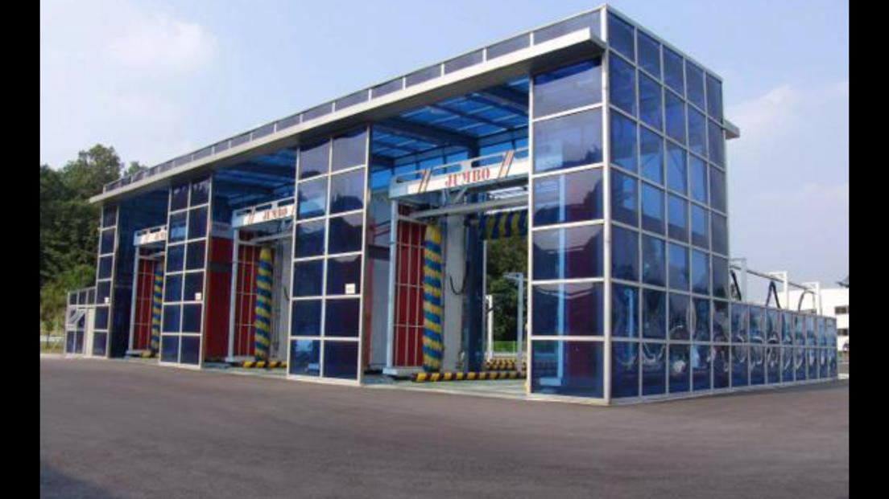

.jpeg)


Lavado de estación
Beneficios:
- Mantener el coche
- Más limpio para el coche
- Ahorrar tiempo solo cinco minutos
- Prevención de óxido del coche
- Amigable y a prueba de mantenimiento
- Facilidad de pago y uso
- Lavandería en cualquier momento 24/7
Datos técnicos
| No. | Descripciones de la función | Detalles de la marca | Observaciones |
|---|---|---|---|
| (1) | Nuestras máquinas lavadoras de camiones de basura también pueden lavar autobuses y camiones | Equipo de prelavado tipo drive through 2.4 para vehículos grandes | Alemania pinfl |
| (2) | Basado en T.S.I original -305 Mantenemos los cepillos laterales para lavar los lados del camión Eliminar el cepillo superior | Equipo de lavado de chasis y neumáticos de vehículos pesados 2.5 Lavadora automática de vehículos grandes tipo rollover 2.6 | Japón NSK Alemania PEPPERL+FUCHS |
| (3) | Lavado PERFILADO del frente y la parte trasera del camión de basura con agua a alta presión. | EQUIPO DE SECADO DE CEPILLOS 2.7 PARA AUTOBUSES Y CAMIONES |
Francia schneider Taiwán Delta |
| (4) | Sistema de mezcla química inteligente. Sistema de suspensión innovador rieles sin resistencia Secado rápido incrustado único | Equipo de rociado químico antiviral tipo drive through 2.8 Cargos de embalaje especiales, subsidio de instalación 2.9 | Alemania PEPPERL+FUCHS |
| (5) | Sistema de alarma de seguridad de voz digital Sistema de autoverificación de fallos Sistema de un botón antiheladas | Contactores taly New Dotz Bomba dosificadora de líquido Baño de acero galvanizado en caliente Boquilla de acero inoxidable 416 de alta resistencia | 70x60 Metro
1 camión / 5 minutos aproximadamente 850L por minuto 75kw / h |
| (6) | Consumo de energía, consumo de productos químicos, consumo de agua | ||
| (7) | Presión de lavado: 3-4kg / cm² Rango de limpieza: chasis de vehículo, ruedas y cubos Cuando el vehículo pasa por |
Excelente que los requisitos de 3kg / cm² en los documentos de licitación Automático y manualmente | La potencia total del motor es de 6 ventiladores * 5.5, cada uno con un total de 33KW. |
| (8) | el equipo durante 1 minuto, la tasa de secado al aire es ≥90% Drive through. Modo de inicio: automático inicio de inducción fotoeléctrica | Dos grupos de cepillos (cepillos de filamento de nylon) Dos grupos de cepillos laterales Viajando rollover (lavado con cepillo, lavado sin contacto) | 2. utilizando el método de secado superior + secado lateral; Presión de aire 0.7Mpa |